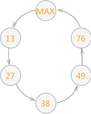
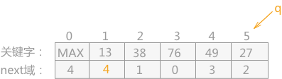
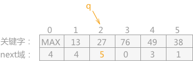
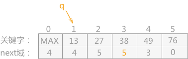

表插入排序算法
前面章节中所介绍到的三种插入排序算法，其基本结构都采用数组的形式进行存储，因而无法避免排序过程中产生的数据移动的问题。如果想要从根本上解决只能改变数据的存储结构，改用链表存储。
表插入排序，即使用链表的存储结构对数据进行插入排序。在对记录按照其关键字进行排序的过程中，不需要移动记录的存储位置，只需要更改结点间指针的指向。
链表的存储结构用代码表示为：
例如，将无序表
例如，上表是已经构建好的链表，对其进行再加工的过程为：
重新排列的具体代码实现为：
表插入排序，即使用链表的存储结构对数据进行插入排序。在对记录按照其关键字进行排序的过程中，不需要移动记录的存储位置，只需要更改结点间指针的指向。
链表的存储结构用代码表示为：
#define SIZE 100
typedef struct {
int rc;//记录项
int next;//指针项，由于在数组中，所以只需要记录下一个结点所在数组位置的下标即可。
}SLNode;
typedef struct {
SLNode r[SIZE];//存储记录的链表
int length;//记录当前链表长度
}SLinkListType;
在使用数组结构表示的链表中，设定数组下标为 0 的结点作为链表的表头结点，并令其关键字取最大整数。则表插入排序的具体实现过程是：首先将链表中数组下标为 1 的结点和表头结点构成一个循环链表，然后将后序的所有结点按照其存储的关键字的大小，依次插入到循环链表中。例如，将无序表
{49，38，76，13，27}用表插入排序的方式进行排序，其过程为：-
首先使存储 49 的结点与表头结点构成一个初始的循环链表，完成对链表的初始化，如下表所示：
-
然后将以 38 为关键字的记录插入到循环链表中（只需要更改其链表的 next 指针即可），插入后的链表为：
-
再将以 76 为关键字的结点插入到循环链表中，插入后的链表为:
-
再将以 13 为关键字的结点插入到循环链表中，插入后的链表为：
-
最后将以 27 为关键字的结点插入到循环链表中，插入后的链表为：

-
最终形成的循环链表为：

O(n2)。
对链表进行再加工
在表插入排序算法求得的有序表是用链表表示的，也就注定其只能进行顺序查找。而如果想用折半查找的算法，就需要对链表进行再加工，即对链表中的记录进行重新排列，具体做法为：遍历链表，将链表中第 i 个结点移动至数组的第 i 个下标位置中。-
首先，通过其表头结点得知记录中关键字最小的是数组下标为 4 的关键字 13，而 13 应该放在数组下标为 1 的位置，所以需要同下标为 1 中存放的关键字进行调换。但是为了后期能够找到 49，将 13 的 next 域指向 49 所在的位置（改变之前需要保存原来的值，这里用 q 指针表示），如下表所示：

-
然后通过 q 指针找到原本 13 指向的下一位关键字 27，同时 q 指针指向下标为 2 的关键字 38，由于 27 应该移至下标为 2 的位置，所以同关键字 38 交换，同时改变关键字 27 的 next 域，如下表所示：

-
之后再通过 q 指针找到下一位关键字时，发现所指位置为下标 2，而之前已经经过了 2 次 移动，所以可以判定此时数组中存放的已经不是要找的，所以需要通过下标为 2 中的 next 域继续寻找，找到下标为 5 的位置，即关键字 38，由于下标 5 远远大于 2，可以判断 38 即为要找的值，所以同下标为 3 的记录交换位置，还要更改其 next 域，同时将 q 指针指向下标为 1 的位置，如下表所示：

- 然后通过 q 指针找到下一位关键字，由于其指向位置的下标 1 中的记录已经发生移动，所以通过 next 域找到关键字 49，发现它的位置不用改变；同样，当通过关键字 49 的 next 域找到下标为 3 的位置，还是需要通过其 next 域找到关键字 76 ，它的位置也不用改变。
重新排列的具体代码实现为：
#include <stdio.h>
#include <stdlib.h>
#define SIZE 6
typedef struct {
int rc;//记录项
int next;//指针项，由于在数组中，所以只需要记录下一个结点所在数组位置的下标即可。
}SLNode;
typedef struct {
SLNode r[SIZE];//存储记录的链表
int length;//记录当前链表长度
}SLinkListType;
//重新排列函数
void Arrange(SLinkListType *SL){
//令 p 指向当前要排列的记录
int p=SL->r[0].next;
for (int i=1; i<SL->length; i++) {
//如果条件成立，证明原来的数据已经移动，需要通过不断找 next 域，找到其真正的位置
while (p<i) {
p=SL->r[p].next;
}
//找到之后，令 q 指针指向其链表的下一个记录所在的位置
int q=SL->r[p].next;
//条件成立，证明需要同下标为 i 的记录进行位置交换
if (p!=i) {
SLNode t;
t=SL->r[p];
SL->r[p]=SL->r[i];
SL->r[i]=t;
//交换完成后，该变 next 的值，便于后期遍历
SL->r[i].next=p;
}
//最后令 p 指向下一条记录
p=q;
}
}
int main(int argc, const char * argv[]) {
SLinkListType *SL=(SLinkListType*)malloc(sizeof(SLinkListType));
SL->length=6;
SL->r[0].rc=0;
SL->r[0].next=4;
SL->r[1].rc=49;
SL->r[1].next=3;
SL->r[2].rc=38;
SL->r[2].next=1;
SL->r[3].rc=76;
SL->r[3].next=0;
SL->r[4].rc=13;
SL->r[4].next=5;
SL->r[5].rc=27;
SL->r[5].next=2;
Arrange(SL);
for (int i=1; i<6; i++) {
printf("%d ",SL->r[i].rc);
}
return 0;
}
运行结果为:
13 27 38 49 76
关注公众号「站长严长生」，在手机上阅读所有教程，随时随地都能学习。内含一款搜索神器，免费下载全网书籍和视频。

微信扫码关注公众号